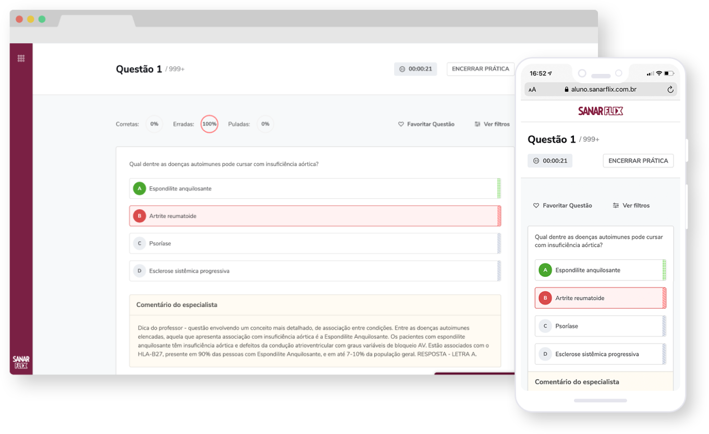
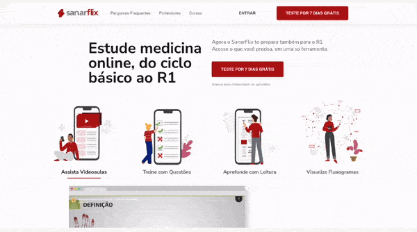

Sanar is a brazilian company that provides several products for healthcare students and workers, depending on their career stage.
I had the opportunity to work as an UX/UI Designer in different e-learning platforms from Sanar, especially Sanarflix and Sanar Residência Médica (RM), besides small visual design tasks for other products.
Sanarflix is an e-learning platform dedicated to healthcare students who just started medical school. The product provides several features to improve the users' studies and prepare them for medical residency.
Within the platform, users can access multiple courses organized in different categories, depending on the medical area. Additionally, students are able to watch video classes, answer questions, read articles and view flowcharts.

I worked on the whole Sanarflix platform and was responsible for designing key pages, like search, my account and cancelation flow. In addition, I’ve designed the screens for their checkout process.

I also worked, in collaboration with other designers, on the visual design for the Sanaflix landing page. This page was created to serve as an informative channel about the product and also as a tool for improving conversion.
The client wanted to perform an A/B Test, introducing the landing page into the conversion flow to check if this page was helping users to purchase the product. Before the actual test, we defined some assumptions and created small tasks and questions in a user testing session to validate our assumptions.
Sanar Residência Médica is a platform dedicated to healthcare workers who are doing medical residency. Within the platform, users are able to watch video lessons, filtered by medical speciality, practice with questions and check their performance compared with other students.
The client needed to change their platform to reflect a similar design and experience to other Sanar products, creating a connection between the products and encouraging a natural transition to the next products
The visual design was updated, based on the e-Sanar experience, with the new global styles - colors, typography, icons, imagery.
For this project, the most important requirement was to keep consistency between the platforms. Even when it comes to different products, we needed to make users feel a seamless experience when transitioning to a different product almost like all products were a single tool adapting according to their needs at the time.